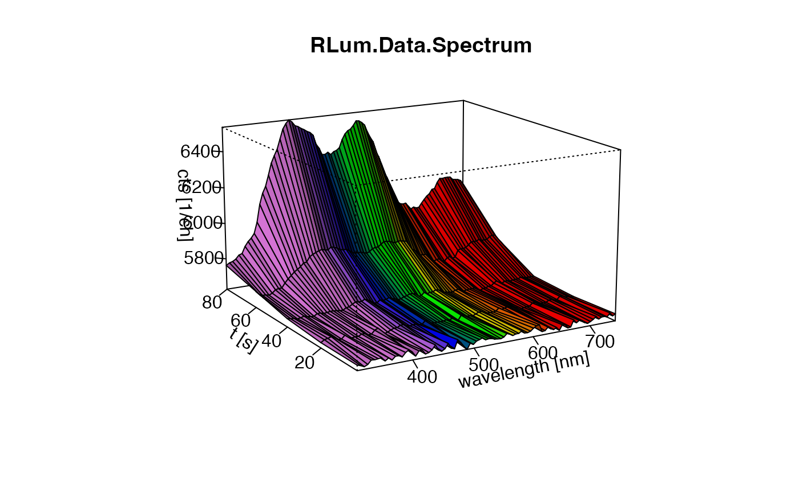
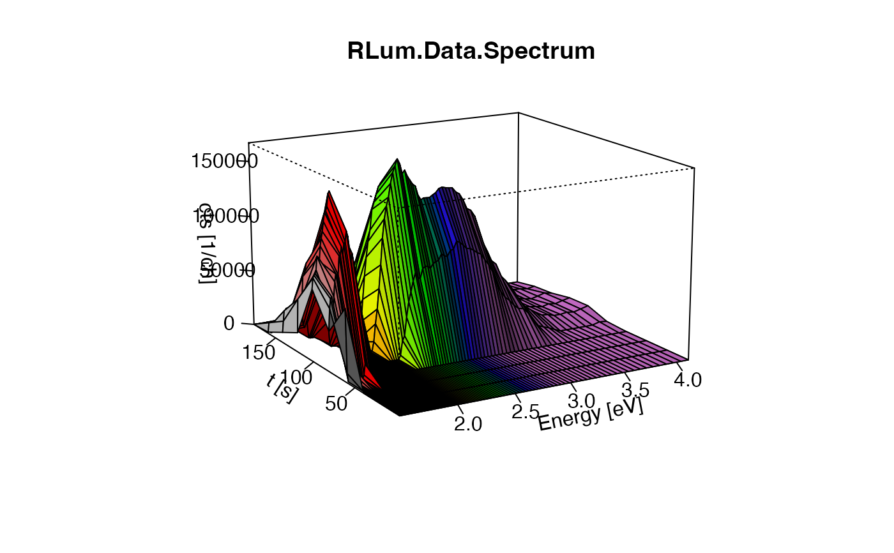
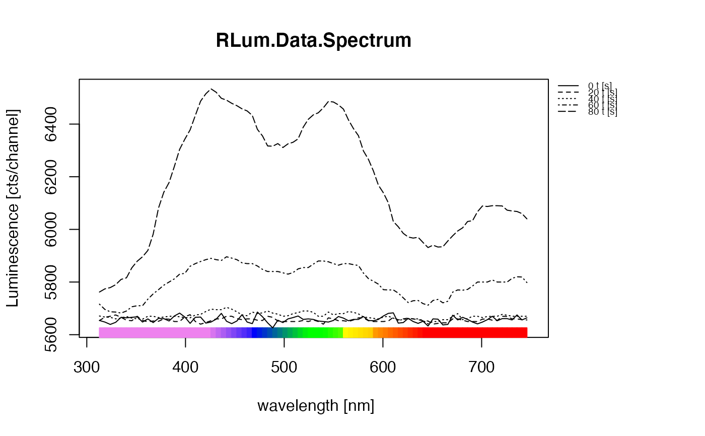

R/plot_RLum.Data.Spectrum.R
plot_RLum.Data.Spectrum.RdThe function provides a standardised plot output for spectrum data of an RLum.Data.Spectrum class object. The purpose of this function is to provide easy and straight-forward spectra plotting, not provide a full customised access to all plot parameters. If this is wanted, standard R plot functionality should be used instead.
Matrix structure
(cf. RLum.Data.Spectrum)
rows (x-values): wavelengths/channels (xlim, xlab)
columns (y-values): time/temperature (ylim, ylab)
cells (z-values): count values (zlim, zlab)
Note: This nomenclature is valid for all plot types of this function!
Nomenclature for value limiting
xlim: Limits values along the wavelength axis
ylim: Limits values along the time/temperature axis
zlim: Limits values along the count value axis
Details on the plot functions
Spectrum is visualised as 3D or 2D plot. Both plot types are based on internal R plot functions.
plot.type = "persp"
Arguments that will be passed to graphics::persp:
shade: default is 0.4
phi: default is 15
theta: default is -30
expand: default is 1
ticktype: default is detailed, r: default is 10
Note: Further parameters can be adjusted via par. For example
to set the background transparent and reduce the thickness of the lines use:
par(bg = NA, lwd = 0.7) previous the function call.
plot.type = "single"
Per frame a single curve is returned. Frames are time or temperature steps.
plot.type = "multiple.lines"
All frames plotted in one frame.
'**plot.type = "image" or `plot.type = "contour" **
These plot types use the R functions graphics::image or graphics::contour.
The advantage is that many plots can be arranged conveniently using standard
R plot functionality. If plot.type = "image" a contour is added by default,
which can be disabled using the argument contour = FALSE to add own contour
lines of choice.
plot.type = "transect"
Depending on the selected wavelength/channel range a transect over the
time/temperature (y-axis) will be plotted along the wavelength/channels
(x-axis). If the range contains more than one channel, values (z-values) are
summed up. To select a transect use the xlim argument, e.g.
xlim = c(300,310) plot along the summed up count values of channel
300 to 310.
Further arguments that will be passed (depending on the plot type)
xlab, ylab, zlab, xlim, ylim,
zlim, main, mtext, pch, type ("single", "multiple.lines", "interactive"),
col, border, box lwd, bty, showscale ("interactive", "image")
contour, contour.col ("image")
plot_RLum.Data.Spectrum(
object,
par.local = TRUE,
plot.type = "contour",
optical.wavelength.colours = TRUE,
bg.spectrum = NULL,
bg.channels = NULL,
bin.rows = 1,
bin.cols = 1,
norm = NULL,
rug = TRUE,
limit_counts = NULL,
xaxis.energy = FALSE,
legend.text,
plot = TRUE,
...
)RLum.Data.Spectrum or matrix (required):
S4 object of class RLum.Data.Spectrum or a matrix containing count
values of the spectrum.
Please note that in case of a matrix row names and col names are set
automatically if not provided.
logical (with default):
use local graphical parameters for plotting, e.g. the plot is shown in one column and one row.
If par.local = FALSE global parameters are inherited.
character (with default): plot type, for
3D-plot use persp, or interactive, for a 2D-plot image, contour,
single or multiple.lines (along the time or temperature axis)
or transect (along the wavelength axis)
logical (with default):
use optical wavelength colour palette. Note: For this, the spectrum range is
limited: c(350,750). Own colours can be set with the argument col. If you provide already
binned spectra, the colour assignment is likely to be wrong, since the colour gradients are calculated
using the bin number.
RLum.Data.Spectrum or matrix (optional): Spectrum
used for the background subtraction. By definition, the background spectrum should have been
measured with the same setting as the signal spectrum. If a spectrum is provided, the
argument bg.channels works only on the provided background spectrum.
vector (optional):
defines channel for background subtraction If a vector is provided the mean
of the channels is used for subtraction. If a spectrum is provided via bg.spectrum, this
argument only works on the bg.spectrum.
Note: Background subtraction is applied prior to channel binning
integer (with default):
allow summing-up wavelength channels (horizontal binning),
e.g. bin.rows = 2 two channels are summed up.
Binning is applied after the background subtraction.
integer (with default):
allow summing-up channel counts (vertical binning) for plotting,
e.g. bin.cols = 2 two channels are summed up.
Binning is applied after the background subtraction.
character (optional): Normalise data to the maximum (norm = "max") or
minimum (norm = "min") count values. The normalisation is applied after the binning.
logical (with default):
enables or disables colour rug. Currently only implemented for plot
type multiple.lines and single
numeric (optional): value to limit all count values to this value, i.e. all count values above this threshold will be replaced by this threshold. This is helpful especially in case of TL-spectra.
logical (with default): enables or disables energy instead of wavelength axis. For the conversion the function convert_Wavelength2Energy is used.
Note: This option means not only simply redrawing the axis, instead the spectrum in terms of intensity is recalculated, s. details.
character (with default):
possibility to provide own legend text. This argument is only considered for
plot types providing a legend, e.g. plot.type="transect"
logical (with default): enables/disables plot output. If the plot
output is disabled, the matrix used for the plotting and the calculated colour values
(as attributes) are returned. This way, the (binned, transformed etc.) output can
be used in other functions and packages, such as plotting with the package 'plot3D'
further arguments and graphical parameters that will be passed
to the plot function.
Returns a plot if plot = TRUE, the default. If plot = FALSE the transformed matrix
used for plotting is returned instead.
Not all additional arguments (...) will be passed similarly!
0.6.4
Kreutzer, S., 2022. plot_RLum.Data.Spectrum(): Plot function for an RLum.Data.Spectrum S4 class object. Function version 0.6.4. In: Kreutzer, S., Burow, C., Dietze, M., Fuchs, M.C., Schmidt, C., Fischer, M., Friedrich, J., Mercier, N., Philippe, A., Riedesel, S., Autzen, M., Mittelstrass, D., Gray, H.J., Galharret, J., 2022. Luminescence: Comprehensive Luminescence Dating Data Analysis. R package version 0.9.17. https://CRAN.R-project.org/package=Luminescence
##load example data
data(ExampleData.XSYG, envir = environment())
##(1)plot simple spectrum (2D) - image
plot_RLum.Data.Spectrum(
TL.Spectrum,
plot.type="image",
xlim = c(310,750),
ylim = c(0,300),
bin.rows=10,
bin.cols = 1)
#> Warning: [plot_RLum.Data.Spectrum()] 6 channel(s) removed due to row (wavelength) binning.
##(2) plot spectrum (3D)
plot_RLum.Data.Spectrum(
TL.Spectrum,
plot.type="persp",
xlim = c(310,750),
ylim = c(0,100),
bin.rows=10,
bin.cols = 1)
#> Warning: [plot_RLum.Data.Spectrum()] 6 channel(s) removed due to row (wavelength) binning.

##(3) plot spectrum on energy axis
##please note the background subtraction
plot_RLum.Data.Spectrum(TL.Spectrum,
plot.type="persp",
ylim = c(0,200),
bin.rows=10,
bg.channels = 10,
bin.cols = 1,
xaxis.energy = TRUE)
#> Warning: [plot_RLum.Data.Spectrum()] 3 channel(s) removed due to row (wavelength) binning.

##(4) plot multiple lines (2D) - multiple.lines (with ylim)
plot_RLum.Data.Spectrum(
TL.Spectrum,
plot.type="multiple.lines",
xlim = c(310,750),
ylim = c(0,100),
bin.rows=10,
bin.cols = 1)
#> Warning: [plot_RLum.Data.Spectrum()] 6 channel(s) removed due to row (wavelength) binning.

if (FALSE) {
##(4) interactive plot using the package plotly ("surface")
plot_RLum.Data.Spectrum(TL.Spectrum, plot.type="interactive",
xlim = c(310,750), ylim = c(0,300), bin.rows=10,
bin.cols = 1)
##(5) interactive plot using the package plotly ("contour")
plot_RLum.Data.Spectrum(TL.Spectrum, plot.type="interactive",
xlim = c(310,750), ylim = c(0,300), bin.rows=10,
bin.cols = 1,
type = "contour",
showscale = TRUE)
##(6) interactive plot using the package plotly ("heatmap")
plot_RLum.Data.Spectrum(TL.Spectrum, plot.type="interactive",
xlim = c(310,750), ylim = c(0,300), bin.rows=10,
bin.cols = 1,
type = "heatmap",
showscale = TRUE)
}